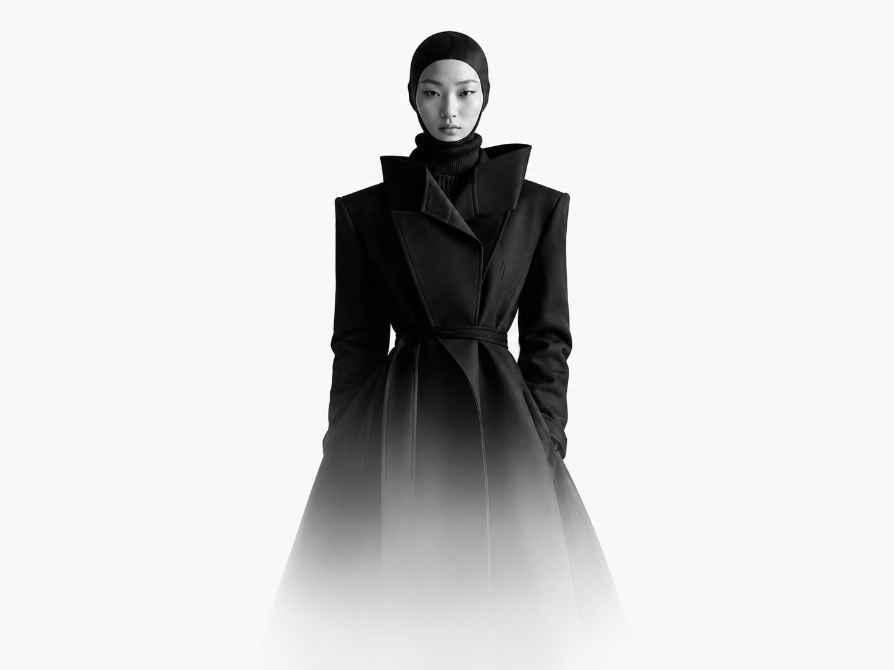
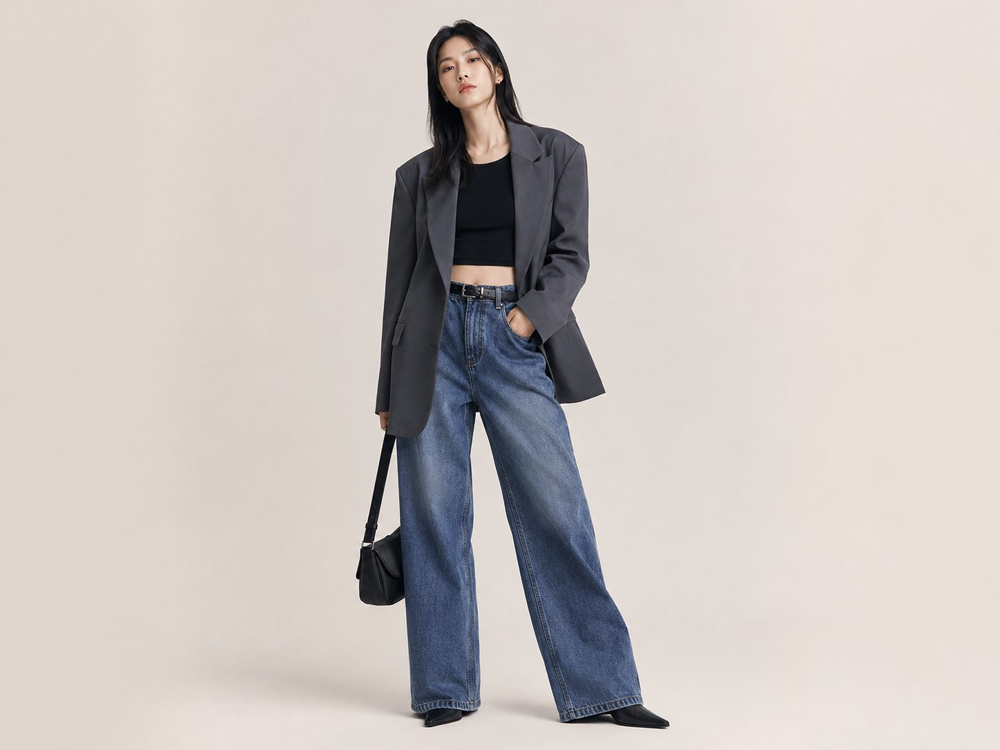
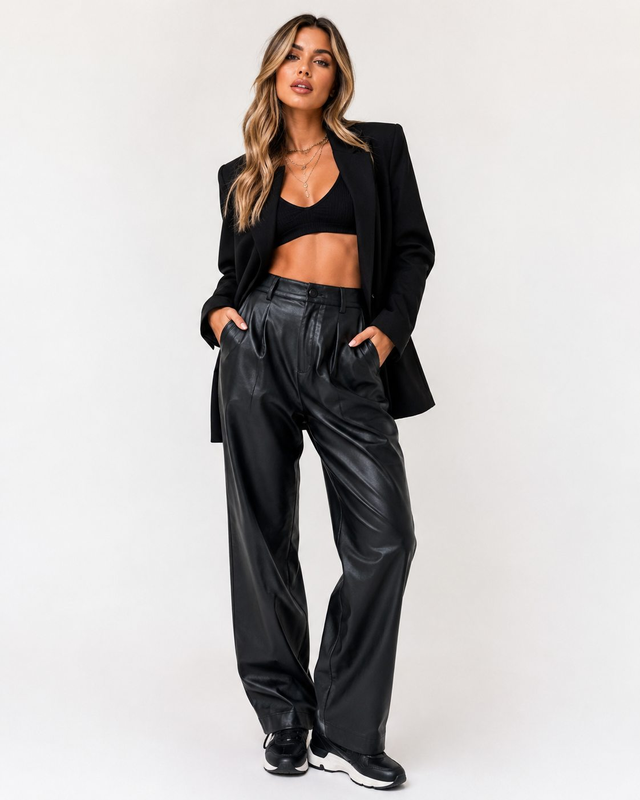
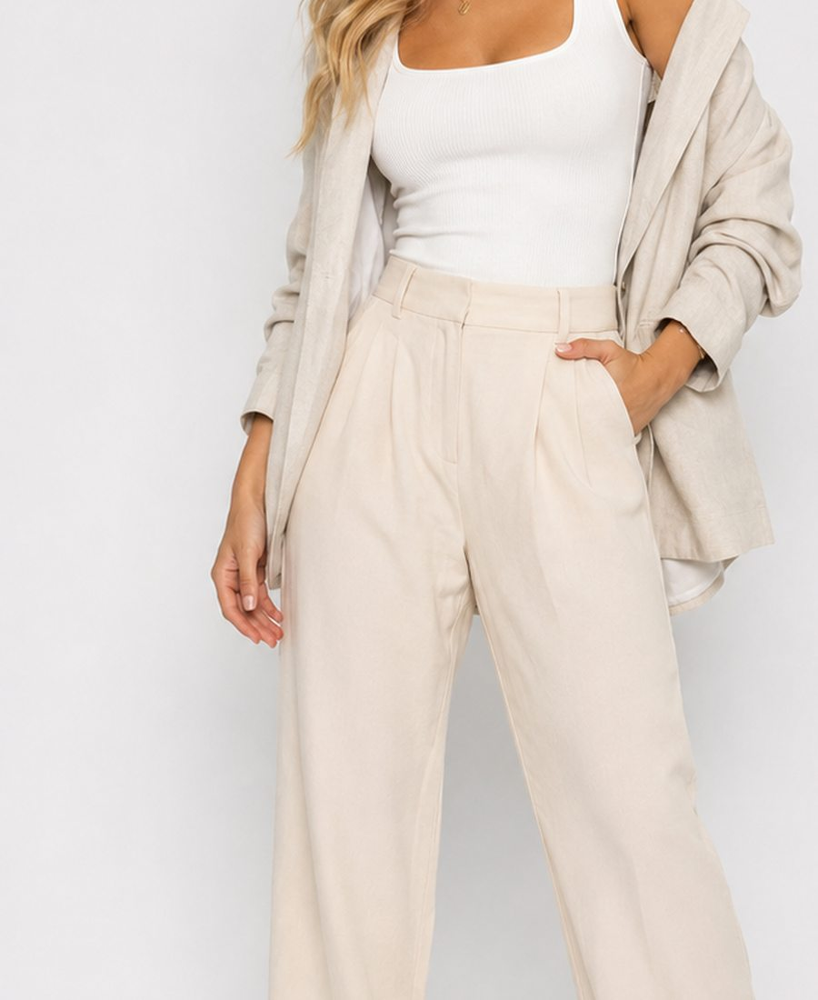

디자이너 캠페인 보드
크리에이터 협업 캠페인
한국 디자이너 브랜드의 룩, 상품, 시즌 무드를 캠페인 보드처럼 소개합니다. 크리에이터는 마음에 드는 작품을 보고 스타일링 콘텐츠 협업을 지원할 수 있습니다.







디자이너 캠페인 보드
한국 디자이너 브랜드의 룩, 상품, 시즌 무드를 캠페인 보드처럼 소개합니다. 크리에이터는 마음에 드는 작품을 보고 스타일링 콘텐츠 협업을 지원할 수 있습니다.



